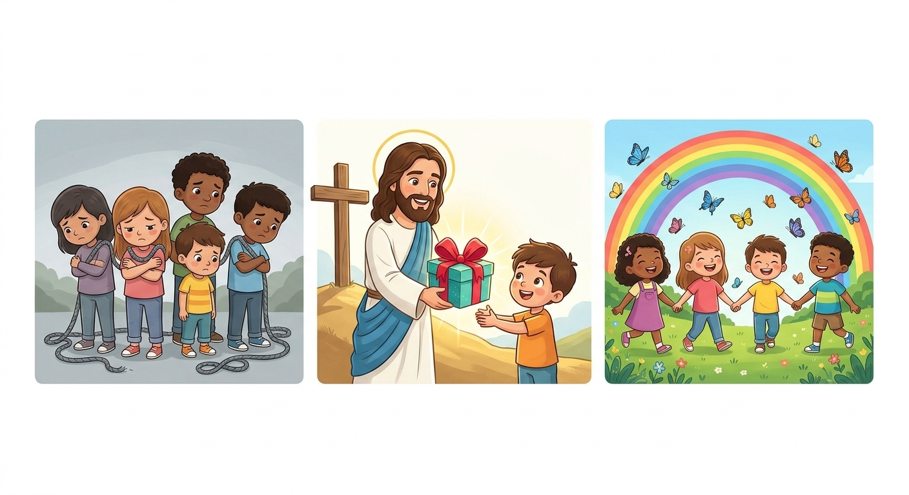
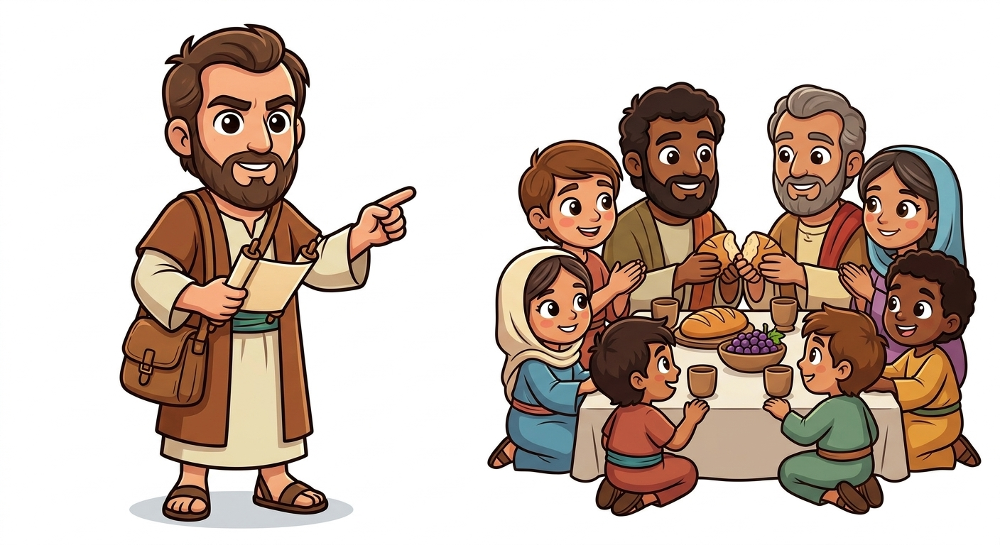
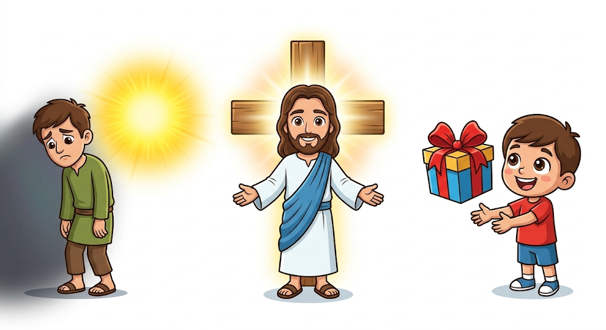
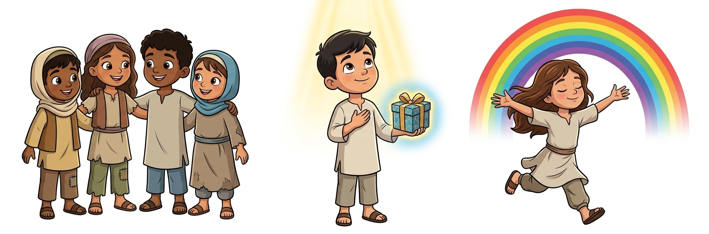
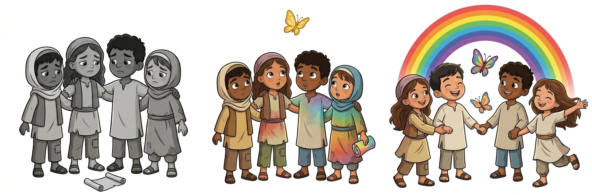
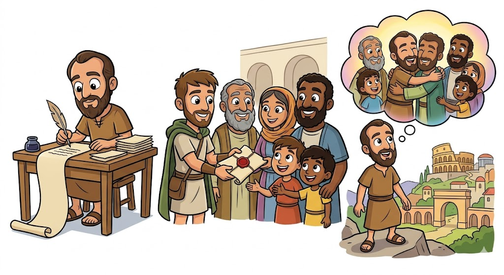

A Carta da Graça e Salvação — Um Resumo Visual para Crianças
Todos nós pecamos, é verdade,
Ninguém é perfeito de verdade!
Mas Deus nos ama sem parar,
E quer nossa vida transformar!
📖 "Todos pecaram e estão destituídos da glória de Deus" - Romanos 3:23
Não é por obras que vamos ganhar,
É pela fé que vamos alcançar!
Jesus pagou tudo na cruz,
Basta crer nEle, nossa luz!
📖 "Porque pela graça sois salvos, mediante a fé" - Romanos 5:1
Quando Jesus entra no coração,
Tudo muda, há transformação!
Somos novas criaturas de verdade,
Vivendo em amor e liberdade!
📖 "Se alguém está em Cristo, nova criatura é" - Romanos 6:4

Paulo era um missionário corajoso que viajava pelo mundo contando sobre Jesus. Ele escreveu esta carta especial para os cristãos que moravam em Roma, a capital do império!
Eram pessoas que acreditavam em Jesus e se reuniam em pequenos grupos nas casas. Paulo queria ensiná-los mais sobre a fé e o amor de Deus!

Paulo explica que todas as pessoas do mundo pecaram e se afastaram de Deus. Ninguém consegue ser perfeito sozinho!
Mas a boa notícia é que Deus nos ama tanto que enviou Jesus para nos salvar! Jesus morreu na cruz e ressuscitou para nos dar vida nova.
A salvação é um presente gratuito de Deus! Não precisamos fazer nada para merecê-la, apenas acreditar em Jesus com todo o coração.

Não precisamos ser perfeitos ou fazer coisas incríveis para Deus nos amar. Ele já nos ama do jeito que somos!
Quando acreditamos em Jesus e confiamos nEle, recebemos o maior presente: a vida eterna com Deus!
A fé em Jesus nos dá paz no coração e liberdade para viver felizes, sabendo que somos amados!

Paulo queria mostrar como a graça de Deus tem o poder de mudar completamente nossa vida!
Quando Jesus entra no coração, nos tornamos pessoas novas, cheias de amor, alegria e vontade de fazer o bem!
O amor de Deus nos transforma de dentro para fora, nos ajudando a viver de um jeito que agrada a Ele!
🌟 Deus quer transformar você também! 🌟

😮 Incrível mas verdade: Paulo escreveu esta carta para os cristãos de Roma antes mesmo de conhecê-los pessoalmente!
📬 Uma carta especial: Ele enviou esta mensagem linda explicando o evangelho, mesmo nunca tendo visitado a cidade!
🗺️ O sonho de Paulo: Ele tinha um grande sonho de ir a Roma e conhecer os irmãos de lá. E depois, ele conseguiu!
📖 Romanos é considerada a carta mais importante sobre a salvação!
© 2025 - Trilho Kids
Desenvolvido com ❤️ para crianças